무선설비기사 (2014-05-31 기출문제)
1과목: 디지털 전자회로
1. 120[V], 60[Hz]의 정현파가 전파정류회로에 인가되었을 때 출력신호의 주파수는?
- 30[Hz]
- 60[Hz]
- 90[Hz]
- 120[Hz]
(정답률: 83%)

2. 정류회로의 리플률을 바르게 나타낸 식은?
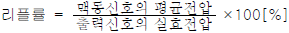
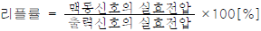
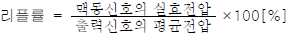
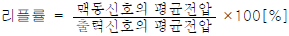
(정답률: 84%)
3. 반도체 다이오드의 두 가지 바이어스(Bias) 조건으로 맞는 것은?
- 발진과 증폭
- 블록과 비블록
- 유도와 비유도
- 순방향과 역방향
(정답률: 87%)
4. 다음 증폭기 회로에서 βDC=75인 경우 컬렉터 전압 VC는 약 얼마인가? (단, VBE=0.7[V]이다.)
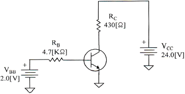
- 15.1[V]
- 20.1[V]
- 19.1[V]
- 16.1[V]
(정답률: 71%)
5. 차동증폭기의 동위상 신호제거비(CMRR)를 표현한 식으로 맞는 것은?
- CMRR = 차동이득 +동위상이득
- CMRR = 차동이득 -동위상이득
- CMRR = 동위상이득 ÷ 차동이득
- CMRR = 차동이득 ÷ 동위상이득
(정답률: 71%)
6. 3단 종속 전압증폭기의 이득이 각각 10배, 20배, 50배일 때 종합증폭도와 종합이득은 각각 얼마인가?
- 종합증폭도는 10배, 종합이득은 20[dB]
- 종합증폭도는 100배, 종합이득은 40[dB]
- 종합증폭도는 1,000배, 종합이득은 60[dB]
- 종합증폭도는 10,000배, 종합이득은 80[dB]
(정답률: 81%)
7. 다음 부궤환 방식 중 입력 임피던스는 감소하고 출력 임피던스가 증가하는 방식은?
- 전류 병렬 궤환회로
- 전압 병렬 궤환회로
- 전류 직렬 궤환회로
- 전압 직렬 궤환회로
(정답률: 65%)
8. 병렬저항 이상형 발진회로에서 캐패시터 값이 0.01[μF]일 경우 1,500[Hz]의 발진주파수를 얻으려면 R값은 약 얼마인가?
- 1.51[kΩ]
- 2.52[kΩ]
- 3.23[kΩ]
- 4.33[kΩ]
(정답률: 62%)
9. 다음 중 수정 발진기에서 주파수 변동이 발생하는 원인이 아닌 것은?
- 전원 전압의 변동
- 주위 온도의 변화
- 부궤환 계수의 변동
- 발진기 부하의 변동
(정답률: 54%)
10. 다음 중 AM 방식의 변조도에 대한 설명으로 틀린 것은?
- 변조도가 1일 때 완전변조라 한다.
- 변조도가 1보다 작으면 파형의 일부가 잘려 일그러짐이 생긴다.
- 변조도는 신호파의 진폭과 반송파의 진폭의 비로 나타낸다.
- 변조도가 1보다 큰 경우를 과변조라 한다.
(정답률: 85%)
11. 디지털 데이터를 전송하기 위해 입력신호에 따라 반송파의 위상을 변화시키는 변조방식은?
- ASK
- QAM
- FSK
- PSK
(정답률: 83%)
12. 저역 통과 RC 회로에서 시정수가 의미하는 것은?
- 응답의 위치를 결정해준다.
- 입력의 주기를 결정해준다.
- 입력의 진폭 크기를 표시한다.
- 응답의 상승속도를 표시한다.
(정답률: 79%)
13. 다음 중 Schmitt Trigger(슈미트 트리거) 회로에 대한 설명으로 틀린 것은?
- 1개의 안정상태를 갖는 회로이다.
- 입력전압의 크기가 ON, OFF 상태를 결정한다.
- A/D 변환기 또는 비교회로에 응용되고 있다.
- 구형펄스 발생회로에 이용된다.
(정답률: 76%)
14. 클리퍼(clipper) 회로에서 입력 파형과 출력 파형간의 관계를 결정하는 소자는?
- 다이오드
- 트랜지스터
- 콘덴서
- 코일
(정답률: 76%)
15. 다음 중 논리방정식이 잘못된 것은?
- A+1 = A
- Aㆍ0 = 0
- A+AㆍB = A
- Aㆍ(A+B) = A
(정답률: 77%)
16. 16진수 1A를 2진수로 표시하면?
- 00001110
- 10100001
- 11111100
- 00011010
(정답률: 82%)
17. 다음 진리표는 어떤 논리회로에 대한 진리표인가?
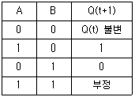
- 전가산기
- 반가산기
- JK 플립플롭
- RS 플립플롭
(정답률: 69%)
18. 십진 BCD 계수가 출력으로 그림과 같은 표시를 이용하려면 어떤 디코더 드라이버가 필요한가?
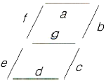
- BCD-10 세그먼트
- Octal-10 세그먼트
- BCD-7 세그먼트
- Octal-7 세그먼트
(정답률: 87%)
19. 다음 그림의 회로의 명칭은 무엇인가?
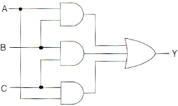
- 일치 회로
- 반일치 회로
- 다수결 회로
- 비교 회로
(정답률: 74%)
20. 다음 중 비동기식 카운터에 대한 설명으로 틀린 것은?
- 리플 카운터라고도 한다.
- 고속 카운팅에 주로 사용된다.
- 전단의 출력이 다음 단의 트리거 입력이 된다.
- 회로가 단순하므로 설계가 쉽다.
(정답률: 75%)
2과목: 무선통신 기기
21. 정현파 신호를 반송파를 이용하여 60[%] 진폭변조(AM)한 경우 반송파 전력이 600[W]라면, 피변조파 전력은 얼마인가?
- 908[W]
- 808[W]
- 708[W]
- 608[W]
(정답률: 83%)
22. FM 신호의 포락선에는 정보가 실려있지 않으므로 잡음으로 인한 포락선의 변화를 균일화시킬 수 있는데 이러한 기능을 수행하는 것은?
- 기저대역 필터
- 변별기
- 진폭제한기
- 반송파 필터
(정답률: 81%)
23. 다음 중 SSB 방식을 DSB 방식과 비교한 설명으로 맞는 것은?
- 송신기의 소비전력은 SSB 방식이 적다.
- 송수신기의 회로는 SSB 방식이 간단하다.
- SSB 방식이 낮은 주파수 안정도를 필요로 한다.
- SSB 방식은 간섭성 페이딩에 의한 영향이 적다.
(정답률: 61%)
24. 다음 중 직교진폭변조(QAM)에 대한 설명으로 적합하지 않은 것은?
- APK(Amplitude-Phase Keying)의 한 형식이다.
- 4진 QAM은 4진 PSK와 대역폭 효율은 동일하다.
- 반송파의 진폭과 위상이 베이스밴드 신호에 따라 변하는 디지털 변조시스템에 사용된다.
- M진 QAM의 대역폭 효율은 log M[bps/Hz]이다.
(정답률: 78%)
25. PCM 시스템에서 발생되는 위상의 흔들림을 무엇이라고 하는가?
- 엘리어싱(Aliasing)
- 양자화 잡음(Quantizing Noise)
- 등화(Equalization)
- 지터(Jitter)
(정답률: 83%)
26. 다음 중 GPS에 대한 설명으로 틀린 것은?
- PZ-90 geometric 좌표계 시스템을 사용한다.
- 24개의 위성을 이용한다.
- 반송파는 1575.72[MHz]를 사용한다.
- 위성 고도는 약 20,200[km]이다.
(정답률: 74%)
27. 정보신호의 기저대역 신호대역폭을 B라 할 때, 협대역 위상변조의 소요 대역폭은 얼마인가?
- B
- 2B
- 3B
- 4B
(정답률: 84%)
28. 다음 중 스펙트럼 확산(Spread Spectrum) 변조 방식에 대한 설명으로 틀린 것은?
- 복조는 비동기 검파방식만 사용한다.
- 전송 중의 신호전력 스펙트럼 밀도가 낮다.
- 확산계수가 클수록 비화성이 우수하다.
- 혼신이나 페이딩 등에 강하다.
(정답률: 75%)
29. 다음 중 레이더의 기능에 의한 오차에 속하지 않는 것은?
- 해면반사
- 거리오차
- 방위오차
- 선박 경사에 의한 오차
(정답률: 92%)
30. 다음 중 VHF를 사용하지 않는 항법 장치는?
- DME
- VOR
- ILS
- RMI
(정답률: 65%)
31. 다음 중 전원회로에서 요구하는 일반적인 성능 요구조건으로 틀린 것은?
- 충분한 전력용량을 가질 것
- 출력 임피던스가 높을 것
- 전압이 안정할 것
- 리플이나 잡음이 적을 것
(정답률: 90%)
32. 다음 중 무정전 전원공급장치(UPS)의 On-Line 방식에 대한 설명으로 틀린 것은?
- 상용전원을 그대로 출력으로 내보내며 축전지는 충전회로를 통해 충전한다.
- 상시 인버터 방식이라고도 한다.
- 항상 인버터 회로를 경유하여 출력으로 내보낸다.
- 출력이 안정되며 높은 정밀도를 가진다.
(정답률: 81%)
33. 다음 중 가정용 태양전지 시스템 구성 요소가 아닌 것은?
- PV(Photovoltaic) Array
- Converter
- 발전계량
- 접지
(정답률: 83%)
34. 다음 중 단상 브리지형 전파 정류회로에 대한 설명으로 틀린 것은?
- 최대 역전압은 Vm 이다
- 맥동 주파수는 전원주파수 f와 같다.
- 맥동율은 48.2[%]이다.
- 정류 효율은 81.2[%]이다.
(정답률: 76%)
35. FM 수신기의 감도 측정에는 어떤 측정 방법이 사용되는가?
- 잡음 증가감도에 의한 측정방법
- 이득 증가감도에 의한 측정방법
- 잡음 억압감도에 의한 측정방법
- 이득 억압감도에 의한 측정방법
(정답률: 86%)
36. 필터법을 이용한 왜율 측정시 필요하지 않은 구성요소는?
- 저주파 발진기
- 감쇠기
- 저역통과필터
- 미분기
(정답률: 61%)
37. 다음 중 접지저항에 대한 설명으로 틀린 것은?
- 공중선을 대지에 접지시킬 때 공중선과 대지 사이에 존재하게 되는 접촉저항이다.
- 접지저항을 크게 하기 위해 다점접지를 사용한다.
- 접지 공중선의 효율을 결정하는 중요한 요소이다.
- 코올라우시 브리지를 이용하여 측정할 수 있다.
(정답률: 84%)
38. 레헤르(Lecher)선에 미지의 전파를 인가했을 때 전압이 초대로 나타나는 두 점 사이의 거리가 3[m]일 경우 미지 전파의 주파수는 몇 [MHz]인가?
- 30[MHz]
- 50[MHz]
- 70[MHz]
- 90[MHz]
(정답률: 55%)
39. 다음 중 축전지에 백색 황산연이 발생하는 원인이 아닌 것은?
- 불충분한 충전
- 방전상태로 방치
- 전해액의 비중이 너무 작을 때
- 전해액 온도상승과 하강 등이 빈번히 일어날 때
(정답률: 70%)
40. 어떤 주파수의 교류를 직류 회로로 변환하지 않고 그 주파수의 교류로 변환하는 직접 주파수 변환장치를 무엇이라 하는가?
- 쵸퍼(Chopper)
- 정류기(Rectifier)
- 사이클로 컨버터(Cyclo Converter)
- 인버터(Inverter)
(정답률: 86%)
3과목: 안테나 공학
41. 다음 중 전자계 현상에 대한 설명으로 틀린 것은?
- 유전율이 커지면 파장은 길어진다.
- 전계 벡터가 X축과 Y축으로 구성되어 크기가 같은 경우를 원형 편파라고 한다.
- 복사 전계의 크기는 거리에 반비례한다.
- 전파의 주파수가 높을수록 직진성이 강하다.
(정답률: 67%)
42. 다음 중 거리에 따라 가장 감쇠가 급격하게 발생하는 것은 어느 것인가?
- 정전계
- 유도계
- 복사전계
- 복사자계
(정답률: 86%)
43. 다음 중 파장이 가장 짧은 주파수대는 어느 것인가?
- UHF
- VHF
- SHF
- EHF
(정답률: 88%)
44. 초고주파 대역에서 사용하는 마이크로스트립(Microstrip) 전송선로가 비유전율 εr=6.9을 가지며, 기판의 폭(w)과 두께(h)의 비가 w/h=4.2일 때, 특성 임피던스는 얼마인가?
- 17.8[Ω]
- 19.8[Ω]
- 21.8[Ω]
- 23.8[Ω]
(정답률: 45%)
45. 복사저항 450[Ω]인 폴디드다이폴 안테나 두개를 λ/4 임피던스 변화기를 사용하여 100[Ω]의 평행 2선식 급전선에 정합시키고자 한다. 이 때 변환기의 임피던스 값은?
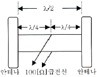
- 212[Ω]
- 424[Ω]
- 300[Ω]
- 600[Ω]
(정답률: 77%)
46. 다음 중 도파관에 대한 설명으로 틀린 것은?
- 도파관은 차단 주파수 이하의 주파수는 통과시키지 않는다.
- 저항손실이 적다.
- TE mode는 진행방향에 대해 전계 E는 나란하고 자계 H는 직각인파를 말한다.
- 도파관에서는 변위전류의 흐름이 관내에서만 발생하므로 전자파를 외부에 방사하거나 수신하는 일이 없다.
(정답률: 71%)
47. 다음 중 동조 급전선에 대한 설명으로 틀린 것은?
- 급전선상에 정재파가 존재한다.
- 급전선의 길이가 길 때 사용한다.
- 임피던스 정합장치가 불필요하다.
- 전송효율이 비동조 급전선보다 낮다.
(정답률: 72%)
48. U자형 Balun을 이용한 정합시 동축 급전선과 평행 2선식 급전선간의 임피던스 변환비로 올바른 것은?
- 1:1
- 1:2
- 1:4
- 1:8
(정답률: 72%)
49. 복사저항이 200[Ω]이고, 손실저항이 35[Ω]이라고 할 때 안테나의 복사효율은?
- 65[%]
- 75[%]
- 85[%]
- 95[%]
(정답률: 84%)
50. 다음 중 안테나 특성을 광대역으로 하기 위한 방법으로 적합하지 않은 것은?
- 안테나의 Q를 적게 한다.
- 진행파 안테나로 한다.
- 안테나 도선의 직경이 가늘어야 한다.
- 자기상사형으로 한다.
(정답률: 70%)
51. 다음 중 극초단파대용 안테나는?
- Whip 안테나
- Slot 안테나
- Adcock 안테나
- Beam 안테나
(정답률: 75%)
52. 다음 중 수직 접지 안테나의 일반적인 특징으로 틀린 것은?
- 수직편파
- 수직면내 쌍반구형 지향특성
- 방송용
- 수평면내 8자 지향 특성
(정답률: 77%)
53. 다음 중 심굴접지에 대한 설명으로 틀린 것은?
- 대지의 도전율이 좋은 경우에 사용한다.
- 수분을 잘 흡수하는 동판을 사용하여 접지저항을 줄인다.
- 고주파에 대해 큰 효과가 없으므로 가접지 또는 보조접지에 이용된다.
- 접지저항을 1[Ω] 이상으로 하려면 접지를 3개~30개 정도의 개수로 적당한 위치에서 접속한다.
(정답률: 81%)
54. 다음 중 제1종 전리층 감쇠에 대한 설명으로 틀린 것은?
- 전자밀도에 비례한다.
- 굴절률에 비례한다.
- 평균 충돌 횟수에 비례한다.
- 주파수의 제곱에 반비례한다.
(정답률: 58%)
55. 다음 중 잡음에 대한 설명으로 틀린 것은?
- 장중파대에서는 공전 잡음이 우주 잡음에 비해 문제가 된다.
- 마이크로파대에서는 자연잡음은 수신기의 내부 잡음에 비해 작다.
- 인공잡음은 시외지역보다 시내지역에서 많이 발생한다.
- 공전잡음은 접지 안테나를 사용하여 줄일 수 있다.
(정답률: 64%)
56. 다음 중 선박용 레이더에서 마이크로파를 사용하는 이유로 틀린 것은?
- 광의 특성과 유사하게 직진하기 때문이다.
- 파장이 짧아 안테나를 소형으로 만들 수 있기 때문이다.
- 파장이 짧아 적은 표적에서도 반사가 되기 때문이다.
- 비나 눈에 의한 영향이 적기 때문이다.
(정답률: 89%)
57. 다음 중 다중경로 페이딩에 의한 에러와 왜곡을 보정하기 위한 방법이 아닌 것은?
- 순방향 에러정정
- 적응 등화
- 다이버시티
- 도플러 확산
(정답률: 86%)
58. 송수신 안테나 높이가 9[M]로 동일하게 놓여 있는 경우 직접파 통신이 가능한 전파 가시거리는 약 얼마인가?
- 8.22[km]
- 12.44[km]
- 24.66[km]
- 32.88[km]
(정답률: 81%)
59. 다음 중 임계 주파수에 대한 설명으로 틀린 것은?
- 전리층에 수직으로 입사하는 전자파의 반사와 투과의 경계가 되는 주파수이다.
- 전리층의 임계주파수를 알면 초대 전자밀도를 알 수 있다.
- 전리층의 전자밀도가 높아지면 임계 주파수는 낮아진다.
- 전리층의 굴절률이 0일 때의 주파수이다.
(정답률: 84%)
60. 다음 중 전파의 수신음이 매질의 상태에 따라 변화하는 전파전파(電波傳播) 현상이 아닌 것은?
- 야간 오차에 의한 현상
- 델린저 현상
- 전파의 회절 현상
- 자기람(Magnetic Storm)
(정답률: 66%)
4과목: 무선통신 시스템
61. 어떤 증폭도가 80일 때 왜율이 3[%]이다. 궤환율 β=0.⑤의 부궤환을 할 때 왜율은?
- 0.2[%]
- 0.4[%]
- 0.6[%]
- 0.8[%]
(정답률: 64%)
62. 다음 중 LTE 상향링크 전송방식인 DFT-Spread OFDM 방식의 특징이 아닌 것은?
- 송신신호의 순시 전력이 크게 변동하지 않는다.
- 주파수 영역 상에서의 복잡도가 낮고 성능이 좋은 이퀄라이저의 사용이 가능하다.
- 유연한 대역폭 할당을 위한 FDMA 방식이 가능하다.
- 순시 송신전력의 변동이 높아서 전력증폭기의 효율을 높일 수 있다.
(정답률: 50%)
63. 전파의 성질 중 지구 등가 반경과 가장 관계가 깊은 것은?
- 반사
- 굴절
- 감쇠
- 회절
(정답률: 78%)
64. 다음 중 이동통신에서 사용되는 코딩기술에 대한 설명으로 틀린 것은?
- 이동통신 코딩의 분류는 전송구간에서 오류를 극복하거나 효율을 증대시키는 채널 코딩과 소스 코딩이 있다.
- 소스 코딩은 전송대상 데이터의 양을 축소하여 전송효율을 증대시키는 것으로 이것은 한정된 자원을 최대한 사용하기 위한 것이다.
- 일반적인 소스 코딩은 메시지의 리던던시를 증대시키는 역할을 한다.
- 채널 코딩방식인 콘볼루션 코딩방식은 원래 데이터를 이용하여 중간중간에 오류를 정정하거나 검색하기 위하여 추가하는 방식이다.
(정답률: 67%)
65. M/W 통신에서 송신출력이 1[W], 송수신 안테나 이득이 각각 30[dBi], 수신 입력 레벨이 -30[dBm]일 때 자유공간 손실은 몇 [dB]인가? (단, 전송선로 손실 및 기타손실은 무시한다.)
- 112[dB]
- 117[dB]
- 120[dB]
- 123[dB]
(정답률: 84%)
66. RF 수신단에서 수신된 신호가 감쇄 및 잡음의 영향으로 인해 매우 낮은 전력레벨을 갖을 경우 잡음을 억제하면서 신호가 증폭될 수 있도록 해주는 RF 부품은?
- 대역 선택 필터(Band Select Filter)
- 아이솔레이터(Isolator)
- 저잡음증폭기((Low Noise Amplifier)
- 믹서(Mixer)
(정답률: 81%)
67. 다음 중 이동무선전화 시스템의 BTS가 수행하는 일이 아닌 것은? (문제 오류로 실제 시험에서는 3, 4번이 정답처리 되었습니다. 여기서는 3번을 누르면 정답 처리 됩니다.)
- 단말기의 동기 유지
- 단말기의 무선접속 기능 수행
- 통화채널 할당/해제
- 단말기의 위치 추적
(정답률: 86%)
68. 다음 중 현재 운영되고 있는 셀에 늘어나는 가입자 수와 사용자의 고속데이터 요구사항이 증대되었을 경우 시스템의 용량을 증대하는 방법으로 적절하지 않은 것은?
- 중계기 설치
- 섹터 증설
- 셀 분리
- 주파수 증설
(정답률: 62%)
69. 다음 중 무선 근거리통신망의 ISM 대역에 대한 설명으로 틀린 것은?
- ISM 대역은 ITU에서 국제적으로 지정하였다.
- 산업ㆍ과학ㆍ의료 대역이라 불리우는 주파수 대역이다.
- ISM 대역을 사용하기 위해서는 별도의 무선국 허가절차가 필요하다.
- 우리나라가 해당하는 제3지역에서는 2.4~2,5[GHz] 등을 사용한다.
(정답률: 77%)
70. 다음 중 변조의 기능으로 틀린 것은?
- 신호파를 반송파에 실어 보낸다.
- 여러 신호를 다중화해서 전송한다.
- 신호의 교류 성분을 직류 성분으로 변환한다.
- 전송매체에 따라 전송에 알맞도록 신호의 형태를 변환한다.
(정답률: 67%)
71. SDTV에서 HDTV로 발전하면서 해상도가 우수해짐으로 인해 가장 많은 영향을 받는 무선 전송 변수는?
- 전송 주파수
- 다중화 방식
- 안테나 크기
- 대역폭
(정답률: 83%)
72. 사람과 사람 사이의 대화도 음파를 통한 일종의 통신이라고 볼 수 있다. 이 경우, 통신 프로토콜의 관점에서 아래의 설명 중 틀린 것은?
- 두 사람이 사용하는 언어가 서로 다르면 통신이 불가능하다.
- 두 사람이 사용하는 언어를 일종의 프로토콜로 볼 수 있다.
- 두 사람이 대화하는 음성의 주파수가 일치되어야 한다.
- 두 사람 모두 음파를 사용하여 의사를 전달해야 한다.
(정답률: 86%)
73. 다음 중 MAC 계층에서 ACK 신호를 만들어 내는 경우에 해당하지 않는 것은?
- 유용한 프레임을 수신할 경우
- 송신 단말이 프레임이 깨지지 않았거나 충돌상태가 아닌 경우
- 정해진 시간 주기 내에서 수신되어지거나 재 전송이 발생될 경우
- 정보를 재 전송할 경우
(정답률: 71%)
74. OSI 참조 모델의 계층과 이에 관련된 프로토콜이나 기술을 잘못 짝지은 것은?
- 데이터링크 계층 - LLC
- 전달 계층 - FTP
- 물리 계층 - IrDA
- 네트워크 계층 - OSPF
(정답률: 76%)
75. 다음 중 하나의 통신 경로를 다수의 사용자들이 동시에 사용할 수 있게 해주는 프로토콜의 기능은?
- 주소 결정
- 캡슐화
- 흐름 제어
- 다중화
(정답률: 86%)
76. 다음 통신 프로토콜 특징 중 상호 연관성이 없는 것은?
- 직렬/병렬(Serial/Parallel)
- 단일체/구조체(Monolithic/Structured)
- 대칭/비대칭(Symmetric/Asymmetric)
- 표준/비표준(Standard/Nonstandard)
(정답률: 66%)
77. 무선통신시스템에서 전송용량이 10,000[bps]이고, 신호대 잡음비(S/N)가 15일 때 필요한 대역폭은 몇 [Hz]인가?
- 2,000[Hz]
- 2,500[Hz]
- 3,000[Hz]
- 3,500[Hz]
(정답률: 74%)
78. 전기 전자장비로부터 불요전자파가 최소화 되도록 함과 동시에 어느 정도의 외부 불요전자파에 대해서는 정상동작을 유지할 수 있는 능력을 갖고 있는지 설명하는 용어는?
- EMI
- EMP
- EMC
- EMS
(정답률: 70%)
79. 텔레비전 방송에서 한 채널의 대역폭은?
- 3[MHz]
- 4[MHz]
- 5[MHz]
- 6[MHz]
(정답률: 81%)
80. 다음 중 WPA(Wi-Fi Protected Access)의 요소가 아닌 것은?
- TKIP
- MIC
- 802.1X
- PDU
(정답률: 67%)
5과목: 전자계산기 일반 및 무선설비기준
81. 다음은 전감산기의 진리표이다. 이 진리표를 이용하여 두 개의 차 D의 불 함수에 대한 표현으로 옳은 것은?
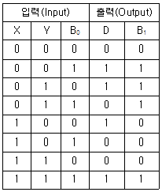
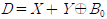
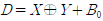
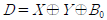
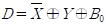
(정답률: 76%)
82. 다음 그림은 마이크로컴퓨터의 동작 원리를 나타내는 것이다. 빈칸에 들어갈 알맞은 용어는?
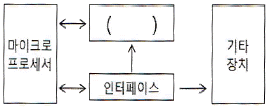
- RAM
- 중앙처리장치
- 플로피 디스크 드라이버
- 하드디스크
(정답률: 70%)
83. 32비트의 데이터에서 단일 비트 오류를 정정하려고 한다. 해밍 오류 정정 코드(hamming Error Correction Code)를 사용한다면 몇 개의 검사 비트들이 필요한가?
- 4비트
- 5비트
- 6비트
- 7비트
(정답률: 62%)
84. 다음 중 그레이 코드(Gray Code)의 특징이 아닌 것은?
- 2비트 변환되는 코드이다.
- 4칙 연산에 사용하는 것은 적합하지 않다.
- A/D 변환기에 사용한다.
- 입출력 코드와 주변장치용으로 이용한다.
(정답률: 58%)
85. 다음 문장에서 설명하는 운영체제의 유형은?
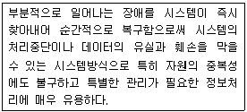
- 시분할 시스템(Time-sharing System)
- 다중 처리(Multi-processing)
- 다중 프로그래밍(Multi-programming)
- 결함허용 시스템(Fault-tolerant System)
(정답률: 81%)
86. 0-주소 명령어(zero-address instruction)에서 사용하는 특정한 기억장치 조직은 무엇인가?
- 그래프(graph)
- 스택(stack)
- 큐(queue)
- 트리(tree)
(정답률: 84%)
87. 다음 중 운영체제의 기능이 아닌 것은?
- 파일 관리
- 장치 관리
- 메모리 관리
- 자료 관리
(정답률: 65%)
88. 다음 보기의 기억장치 중 속도가 가장 빠른 것에서 느린 순서대로 나열한 것으로 맞는 것은?
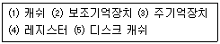
- ⑷-⑶-⑴-⑸-⑵
- ⑷-⑸-⑶-⑴-⑵
- ⑷-⑴-⑶-⑸-⑵
- ⑷-⑸-⑴-⑶-⑵
(정답률: 84%)
89. 다음 중 공개 소프트웨어에 대한 설명으로 틀린 것은?
- 무료의 의미보다는 개방의 의미가 있다.
- 라이센스(License) 정책을 만들어 유지하도록 한다.
- 모든 상업적인 목적에 사용은 불가하다.
- 공개 소스 소프트웨어와 같은 의미로 사용한다.
(정답률: 73%)
90. 다음 중 인터럽트의 발생 원인에 대한 설명으로 틀린 것은?
- 컴퓨터 구성품의 물리적 결함
- 주변 장치들의 동작에 따른 중앙처리장치에 대한 기능 요청
- 프로그램 내 A 루틴에서 B 루틴으로의 연결
- 긴급 정전사태 발생으로 인한 컴퓨터 전원 OFF
(정답률: 73%)
91. 다음 중 주파수 회수 또는 주파수 재배치 규정에 따른 주파수 이용실적의 판단기준이 아닌 것은?
- 해당 주파수의 이용현황 및 수요전망
- 새로운 서비스 도입 동향
- 국가안보 또는 인명안전 등의 공익적 필요성
- 국제적인 주파수의 사용동향
(정답률: 64%)
92. 다음 중 전파감시 업무 수행 목적이 아닌 것은?
- 혼신의 신속한 제거
- 전파의 효율적 이용을 촉진
- 전파응용설비의 인증
- 전파 이용질서의 유지 및 보호
(정답률: 74%)
93. 전파법령에서 정의하는 ‘지구국’에 대한 설명으로 맞는 것은?
- 인공위성을 개설하기 위해 필요한 무선국
- 우주국 및 지구국으로 구성된 통신망의 총체
- 우주국과 통신을 하기 위하여 지구에 개설한 무선국
- 지구를 둘러싼 전리층에서 지구표면으로 전파를 발사하는 무선국
(정답률: 88%)
94. 선박의 조난시 구조선박의 레이더 화면상에 자신의 위치를 여러 개의 점으로 표시하여 구조활동을 용이하게 하기 위한 설비는?
- 라디오부이(radio buoy)
- 수색구조용 레이더 트랜스폰더
- 디지털 선택호출장치
- 비상위치지시용 무선표지설비
(정답률: 73%)
95. 다음 중 지상파 DMB 방송용 무선설비의 기술기준의 방송신호 구성요소에 해당하지 않는 것은?
- 오디오 서비스 신호
- 비디오 서비스 신호
- 데이터 서비스 신호
- 파일럿 서비스 신호
(정답률: 88%)
96. 무선설비의 주요 기자재를 검수하는 방법 중 시험에 의한 방법의 검수 내용으로 틀린 것은?
- 검수방법은 감리사가 입회하여 재료제작자의 시험설비나 공장시험장에서 시험을 실시하고 그 결과로 얻은 성적표로 검수한다.
- 감리사가 공공시험기관에 시험을 의뢰 요청하여 실시하고 그 시험성적 결과에 의하여 검수한다.
- 규격을 증명하는 KS 등의 마크가 표시되어 있는 규격품이나 적절하다고 인정할 수 있는 품질증명이 첨부되어 있는 제품을 대상으로 한다.
- 대상 기자재의 범위는 공사상 중요한 기자재 또는 특별 주문품, 신제품 등으로써 품질 성능을 판정할 필요가 있는 기자재로 한다.
(정답률: 84%)
97. 다음 중 무선국 개설허가의 유효기간이 5년이 아닌 것은?
- 실험국
- 기지국
- 간이무선국
- 아마추어국
(정답률: 80%)
98. 방송통신기자재 등의 적합성평가 표시기준으로 볼 수 없는 것은?
- 적합인증 표시
- 제조공정적합 표시
- 적합등록 표시
- 잠정인증 표시
(정답률: 60%)
99. 방송통신기자재 지정시험기관의 지정기준 중 서류심사 항목에 해당되지 않는 것은?
- 구비서류의 적정성
- 조직 및 인력의 적정성
- 조직의 재정적 적정성
- 품질관리규정의 적정성
(정답률: 73%)
100. 무선설비의 안전설비기준에서 정하는 발전기, 정류기 등에 인입되는 고압전기는 절연차폐체 내에 수용하여야 한다. 다음 중 고압전기에 포함되는 것은?
- 220볼트를 초과하는 교류전압
- 220볼트를 초과하는 직류전압
- 500볼트를 초과하는 교류전압
- 750볼트를 초과하는 직류전압
(정답률: 85%)